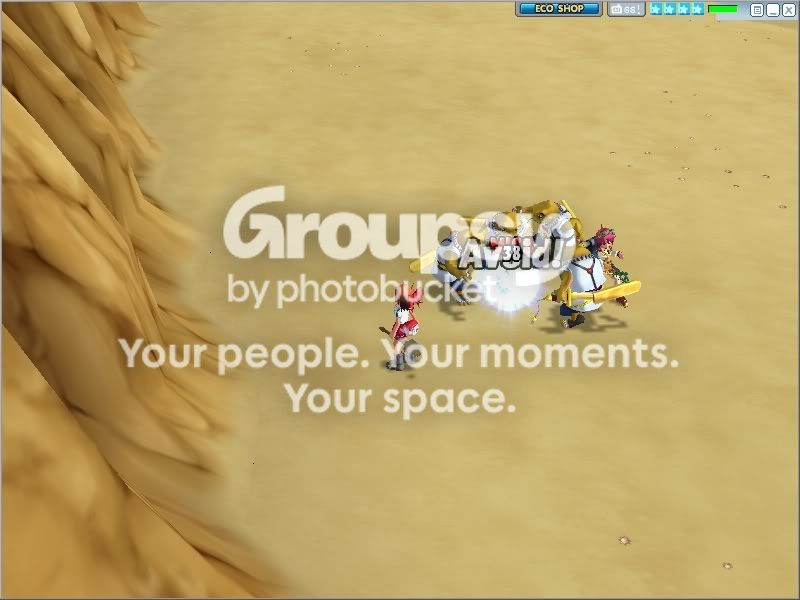

หน้า 14 จากทั้งหมด 187

โพสต์แล้ว:
อาทิตย์ 04 พ.ค. 2008 10:17 pmโดย ECO
ปั้ม rep มั้ง
ไม่เป็นไร ขี้เกียจตอบ :p
โพสต์แล้ว:
อาทิตย์ 04 พ.ค. 2008 10:33 pmโดย ECO
เหอะๆ
ช่วยหน่อยคร้าบตัดสินใจไม่ถูกจะใช้ปืนสั้นหรือไรเฟิลดี
โพสต์แล้ว:
จันทร์ 05 พ.ค. 2008 12:34 amโดย ECO
ตัดสินใจไม่ถูกอ่ะว่าจะเล่นปืนสั้น1กระบอก หรือปืนไรเฟิลดี เพราะชอบทั้ง2อย่าง :evil:
สายไหนดีกว่ากันแนะนำด้วยครับขอบคุณครับ
โพสต์แล้ว:
จันทร์ 05 พ.ค. 2008 12:42 amโดย ECO
- -
จะบอกให้เลือกตามใจชอบ ก็คงเลือกไมได้สินะ
งั้นจะแยกข้อดีข้อเสียไว้ละกัน
ปืนสั้น
1. ระยะยิงสั้น แต่แรง (ยิ่งไกลยิ่งเบาอันนี้ไม่ไกล เลยแรงเยอะ)
2. มีสกิล Fast Draw แรงไม่มากแต่รัวชิบ
3. มีโอกาศเจ็บตัวสูงหาก ไม่ฆ่าอย่างรวดเร็วหรือใช้ Over Rage
ไรเฟิล
1. ยิงไกล มีความปลอดภัยสูง แต่เบาตามระยะทาง (Str ต้องเยอะเพื่อกลบจุดนี้)
2. ความสามารถในการโจมตี น้อยที่สุด แต่ได้ระยะจึงตั้งหลักง่าย
3. ไม่มีความสามารถพิเศษเฉพาะ ยกเว้นยิงไกล (ปืนสั้นมี Fast Draw ปืนคู่มี +L.Hit)
โพสต์แล้ว:
อังคาร 06 พ.ค. 2008 6:34 pmโดย ECO
เห็นมันตกเลยขุดให้แบบเนียนๆ 8)
โพสต์แล้ว:
พฤหัสฯ. 08 พ.ค. 2008 5:48 pmโดย ECO
พาหมา เข้า คอร์ส นรก เพิ่มความแข็งแกร่ง
Pet ใครไม่ถึก กรุณาอย่าเลียนแบบ !!!!!

ปล. หลังถ่ายเสร็จ นายแบบได้เสียชีวิต เพราะ ฮิวไม่ทัน ภาพค้าง
โพสต์แล้ว:
พฤหัสฯ. 08 พ.ค. 2008 6:14 pmโดย ECO
หมาเค้าโดน Pururu รุมเกือบ 20 ตัวยังสบายงิ
เก่งกว่าเห็นๆ
โพสต์แล้ว:
พฤหัสฯ. 08 พ.ค. 2008 6:21 pmโดย ECO
ขอภาพ ๆ
เงิ้ว =A = คำนวนผิดพลาด S.Avoid ยังไม่เต็มไปล้มซะ
ฝึกยากเลยทีเน้ แพทใหม่ทีพิษ
โพสต์แล้ว:
พฤหัสฯ. 08 พ.ค. 2008 6:27 pmโดย ECO
Zilenia เขียน:ขอภาพ ๆ
เงิ้ว =A = คำนวนผิดพลาด S.Avoid ยังไม่เต็มไปล้มซะ
ฝึกยากเลยทีเน้ แพทใหม่ทีพิษ
เค้าเล่นมุขง่ะ ขอโทษๆ คงไม่มีภาพให้เชยชม :oops:
โพสต์แล้ว:
พฤหัสฯ. 08 พ.ค. 2008 6:48 pmโดย ECO
เจอสกัดมุข เข้าจ๋อยเลยวุ้ย
โพสต์แล้ว:
พฤหัสฯ. 08 พ.ค. 2008 9:44 pmโดย ECO
ตั้งแต่เล่นมายังไม่เคยล้ม PET เลย
ยอมรับว่ามีความสนใจในเรื่อง PET ของเกมนี้น้อย :cry:
โพสต์แล้ว:
พฤหัสฯ. 08 พ.ค. 2008 9:57 pmโดย ECO
ก็อาชีพ มันไม่ใช้ Pet นิฝ่า - -
ใช้อย่างมากก็ เนโกะ แต่หลังๆก็ลากพระไปแทน เนโกะเปราะ ทิ้งไปได้เลย ...
โพสต์แล้ว:
ศุกร์ 09 พ.ค. 2008 7:24 amโดย ECO
ปล. หลังถ่ายเสร็จ นายแบบได้เสียชีวิต เพราะ ฮิวไม่ทัน ภาพค้าง
เซลิเนียคุงผู้น่าสงสาร = =
โดนเจ้านายปล่อยทิ้งเพราะหันไปตั้งกล้องสินะ สินะ
/me โดนหมากัดจมเขี้ยว
โพสต์แล้ว:
ศุกร์ 09 พ.ค. 2008 10:59 amโดย ECO
ไซเลนเนีย ฟร้อย (อักษรตัวแรกคือ ไซ)
โพสต์แล้ว:
ศุกร์ 09 พ.ค. 2008 12:15 pmโดย ECO
รู้สึกหมาป่า ไม่มีเกียร์ถอยหลัง ฝึก M.DEF M.Resist ยากเลย - -'